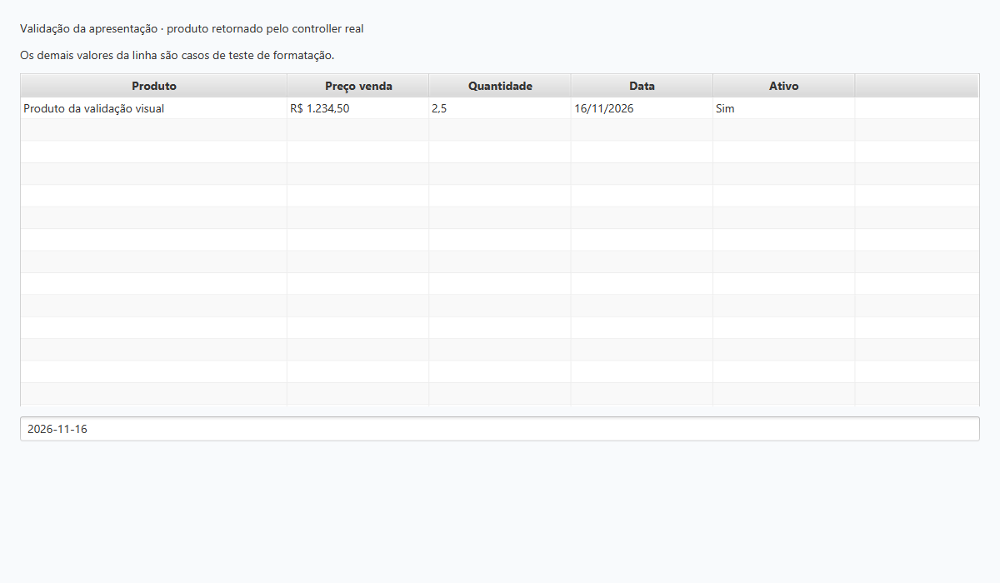

Relatório PDF dos testes e evidências · Relatório HTML
Complemento JavaFX baseado na nova documentação do Igor e nas dez imagens enviadas. Preserva as telas da versão 2.5 e acrescenta formatação somente na apresentação, respeitando a opção de não alterar arquivos existentes.
Requer JDK 21 ou superior e o código da nova interface do Igor, com a classe br.com.senac.view.javafx.SazonaliseiGuiApp. A interface antiga não é compatível. Extraia este pacote em uma pasta nova; não substitua src, pom.xml ou scripts do projeto.
Abra o PowerShell na pasta extraída e informe o caminho do repositório atualizado:
powershell -NoProfile -ExecutionPolicy Bypass -File .\iniciar_formatado.ps1 -Nucleo "C:\caminho\do\projeto-atualizado"
Se esta pasta estiver diretamente dentro da raiz do projeto atualizado, -Nucleo pode ser omitido e iniciar.bat também pode ser usado. Maven e dependências são obtidos na primeira execução, se ausentes. Todos os fontes originais são lidos e compilados para a pasta .build deste complemento.
Use esse lançador para ter a nova formatação. O script original iniciar_interface_javafx.ps1 não instala este complemento. Não há alteração de atalhos ou de arquivos existentes.
Banco H2 e configuração local ficam em .build/ambiente. Esta execução não usa automaticamente os dados da sua execução anterior. O chatbot começa em modo manual; configure a chave localmente na tela original de configurações se quiser usar IA. Nenhuma chave é copiada do seu projeto ou incluída neste pacote. Não há reset automático nem carga histórica automática.
| Retorno exibido | Apresentação |
|---|---|
| Preço, valor e custo em colunas monetárias | Reais com separadores brasileiros, por exemplo R$ 1.234,50; arredondamento de exibição half-even. |
| Quantidades e medidas | Vírgula decimal, sem zeros finais desnecessários. |
| Datas ISO ou tipos LocalDate/LocalDateTime/SQL | dd/MM/aaaa e dd/MM/aaaa HH:mm. |
| Booleanos e ausência de dados | Sim/Não e Não informado. |
| Entidades em tabelas e seleções | Nome, sigla ou descrição pública em vez de toString técnico, quando a célula usa a representação padrão. |
| JSON estruturado em texto de saída | Campos e registros legíveis, com omissão de chaves de credenciais e proteção contra referências circulares. |
| Saídas já formatadas | Preservadas quando usam formato brasileiro, textos especializados ou células com gráficos/botões. |
Os objetos retornados pelos controllers permanecem intactos. O complemento observa somente controles visuais e não transforma parâmetros de entrada, objetos persistidos, quantidades de estoque ou regras de pagamento. Códigos e documentos sem contexto numérico são preservados.

Referência: PDF de 19 páginas, versão 2.5, e dez imagens recebidas. Base de código analisada: main 291d403. O documento descreve o sistema existente; as afirmações de homologação e desempenho do PDF não substituem os testes desta entrega.
| Módulo da documentação | Tratamento desta entrega |
|---|---|
| 1 · Início e clima | Tela oficial reutilizada; apresentação de textos e datas observada pelo complemento. |
| 2 · PDV e múltiplos pagamentos | Tela e fluxo originais preservados; formatação de células sem alterar valores de venda ou pagamento. |
| 3 · Catálogo, estoque e lotes | Tela original preservada; nomes, quantidades e datas legíveis nas células padrão. |
| 4 · Financeiro e DRE | Tela original preservada; moeda e percentual conforme o contexto da coluna. Cálculos continuam no núcleo. |
| 5 · Estatística | Tela oficial reutilizada; nenhum indicador ou prognóstico foi inventado pelo complemento. |
| 6 · Mapa, GPS e clima | Tela e fontes externas originais preservadas. Leituras externas não foram homologadas aqui. |
| 7 · Kanban de demanda | Esteira e regras originais preservadas. |
| 8 · Central operacional e IA | Chatbot e bandeja originais preservados; nenhuma operação é confirmada automaticamente. |
| 9 · Configurações e CSV | Formulários e mapeamento originais preservados; campos editáveis não são formatados pelo complemento. |
| 10 · Referência de tema escuro | O gerenciador de tema original continua responsável pelas cores. Este complemento não redesenha o tema. |
Imagens geradas da montagem dos módulos: Início, PDV, Catálogo, Financeiro, Estatística, Mapa, Kanban, IA, Configurações. A montagem foi validada sem acionar as cargas externas de cada aba; imagens vazias não comprovam consultas ou integrações externas.
Teste executado em 16/11/2026, JDK 26 com alvo Java 21, H2 em memória e sem chave de IA. Resultado: 41 verificações aprovadas e 221 arquivos protegidos preservados. Conferência dos nove módulos, cadastro real pelo controller, células, listas, JSON, datas, arredondamento, atualização de texto e preservação dos valores. Veja resultado-validacao.json e hashes do núcleo preservado.
powershell -NoProfile -ExecutionPolicy Bypass -File .\iniciar_formatado.ps1 -Nucleo "C:\caminho\do\projeto-atualizado" -Validar
Esta validação não executa novamente as 85 rotas ou a suíte completa do backend. Não homologa todas as funções descritas no PDF, impressão, voz, desempenho de 60 FPS, multi-pagamentos, GPS, APIs externas ou equivalência visual de todos os estados das telas.
A formatação complementar é aplicada a Label, TableCell e ListCell não vinculados. Textos desenhados diretamente em Canvas, campos de entrada, células com gráficos/botões e propriedades vinculadas continuam com seus renderizadores originais. Dados sem contexto suficiente não recebem unidade monetária por suposição. Uma mensagem técnica já achatada pelo formatador original pode não permitir reconstruir a estrutura do retorno.
Não foram alterados arquivos existentes do repositório, controllers, serviços, banco, scripts ou pom.xml. O código novo fica em br.com.senac.apresentacao. Não use a correção experimental da interface antiga nesta versão.
Envie esta pasta adicional ao Igor para revisão. A pasta .build é ignorada e não deve ir para o GitHub. O complemento e os registros de validação são disponibilizados em uma branch separada para revisão da equipe. Os hashes das fontes recebidas estão em fontes-utilizadas.json.